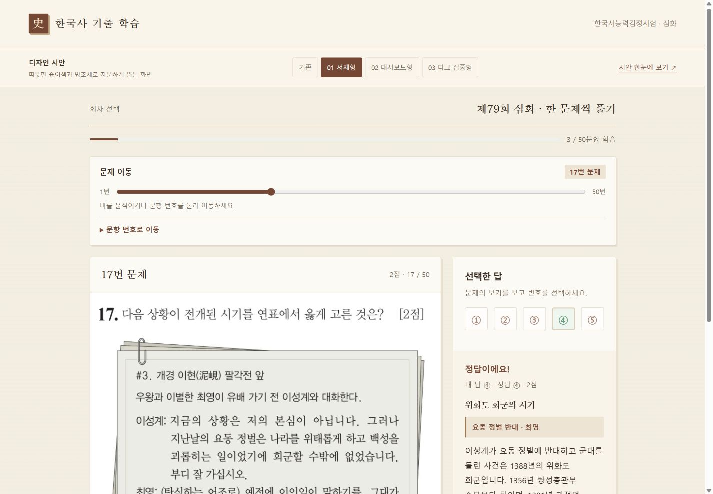

THREE DIRECTIONS / 같은 기능, 다른 분위기
이전에 비교한 디자인 시안
현재 학습 화면은 기존 초록색 디자인을 개선한 버전입니다. 아래 이미지는 이전 시안의 참고용 미리보기입니다.


기존 초록색 디자인을 바탕으로 학습 화면을 개선했습니다. 한 문제씩 풀기, 정답·해설 확인, 문제 이동, 진도 저장은 그대로 사용할 수 있습니다.
현재 학습 화면은 기존 초록색 디자인을 개선한 버전입니다. 아래 이미지는 이전 시안의 참고용 미리보기입니다.
기존 초록색 디자인을 바탕으로 학습 화면을 개선했습니다. 한 문제씩 풀기, 정답·해설 확인, 문제 이동, 진도 저장은 그대로 사용할 수 있습니다.